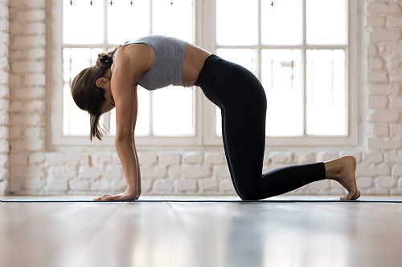
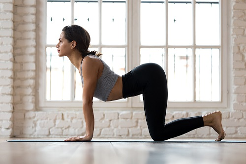
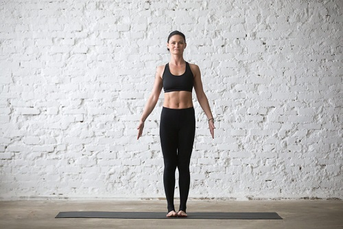
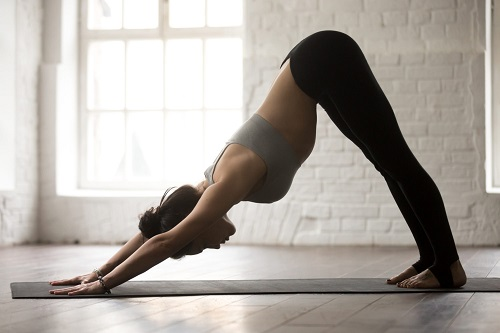
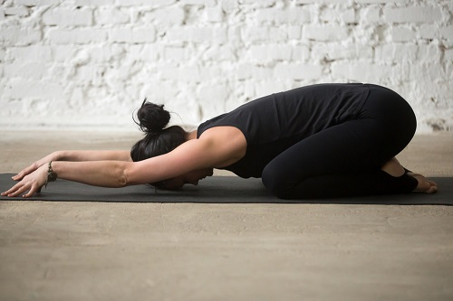

What are some basic yoga postures to know?
Going to your first yoga class can be intimidating. One way to feel more prepared is to get familiar with a few of the main poses beforehand. Here are the essentials:
1. Cat and Cow Poses
These two poses are usually combined as part of a warm-up. To do them, start off on hands and knees. For cow pose, arch your back, articulating through your spine as you do so, and look up. To do cat pose, move your back in the opposite direction, round it, and look down.


2. Mountain Pose
The starting point for yoga sun salutations is tadasana, mountain pose. To do it, stand tall with your feet together, arms by your sides, abdominal muscles engaged, and gaze straight ahead.

3. Downward Dog
Adho mukha svanasana, downward-facing dog, is common in many yoga sequences. To get into it, start off on hands and knees, and then pull your hips and knees up, so your body forms an upside-down "V" shape, similar to the one that dogs make when they're stretching.

4. Child's Pose
What do you do if you get to your first yoga class and you're exhausted during the flow? There's a pose for that. Child's pose, balasana, is a resting posture that you can take at any point during class if you need it. To do it, start on hands and knees, then pull your seat back toward your heels, stretch your arms forward or along your sides, and allow your head to rest on the ground.

5. Deep Breathing
Deep breathing isn't a pose, but it's crucial to executing any posture. Learning how to breathe would be the first place to start. Many yoga styles use ujjayi, a deep, slow, audible breathing through the nose.